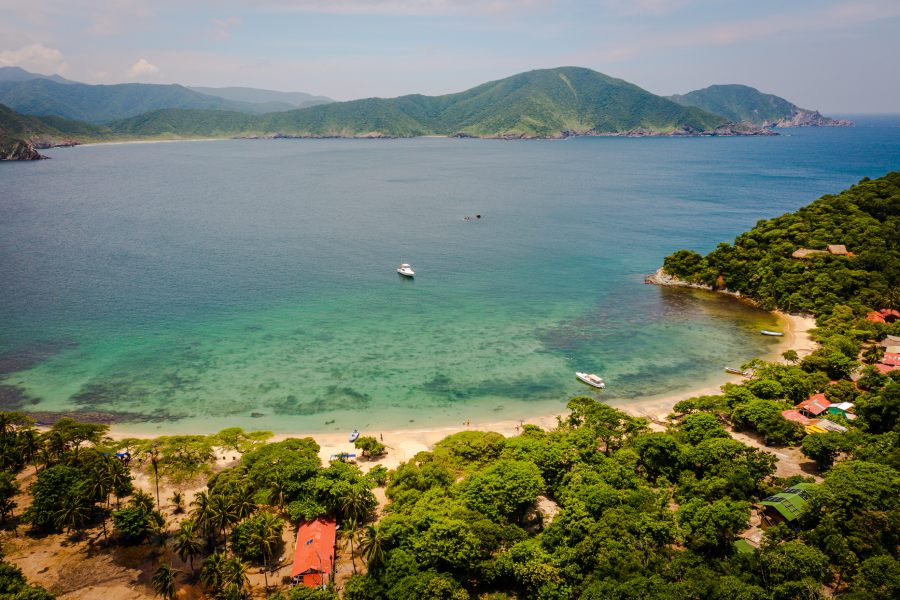

Las Playas del Parque Tayrona
Lo primero que debe hacer es visitar las playas del Parque Tayrona, cada una con un paisaje único, visitadas por turistas nacionales y extranjeros durante todo el año, estas playas del Tayrona se caracterizan por su arena blanca y aguas cristalinas; también hay muchas rutas de senderismo para explorar.
Eco Hotel Yachay Tayrona es el mejor lugar para hospedarse en Santa Marta si desea conocer las mejores playas del Parque Tayrona.
Playa Cristal Santa Marta
Ubicada en el Parque Tayrona sector Neguanje, Playa Cristal es uno de los destinos turísticos mas visitados de Santa Marta ideal para un día de descanso y relax, disfrutando de sus cálidas aguas.
Esta playa del Tayrona es un destino ideal para nadar, tomar el sol y bucear. También hay varios restaurantes y carpas en la zona para que los visitantes disfruten de la gastronomía del caribe.
Playa Cabo San Juan
Una de las playas más bonitas de Colombia, se encuentra dentro del Parque Tayrona y vale la pena una caminata ecológica para llegar allí; con aguas cristalinas y mucho espacio para relajarse, no es de extrañar que esta sea una de las playas más hermosas de Colombia.
Taganga Santa Marta
La playa de Taganga es una de las más conocidas de Santa Marta, es un destino para observar la cultura de la gente, ya que tanto los samarios como los turistas de todas partes del mundo se reúnen aquí para disfrutar del sol, nadar o simplemente dar un paseo por la orilla de la playa.
Taganga es un pueblo de pescadores que se encuentra a tan solo 20 minutos de Santa Marta; esta playa es la más amigable para los mochileros en Colombia y es un excelente punto para explorar el Parque Nacional Tayrona en lancha.
Encontramos también en este destino, una serie de restaurantes para todo tipo y bares ubicados en este pueblo, por lo que es fácil encontrar algo para comer o beber a cualquier hora.